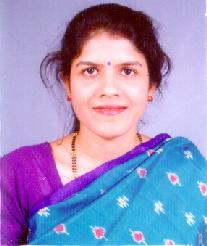

WEEKEND THOUGHTS # 1

Hello Everyone,
Welcome back!! Hope you had a great holiday season! Wish you all a very successful and happy year. We are pleased to have a nice article from Chitralekha Hota. She is not new to our readers. Her article on food was liked by all our readers on Ornet. Seemaji also remembered this wonderful article in her wonderful thoughts (Year End Thoughts, 1996). Here is another article from Chitralekha. In her own neat way she presents her thoughts lucidly.
She writes about a topic which is so very important to all of us. We are all looking for the perfect career for each one of us. I know that I fought with a lot of career decisions when I was young. Parents also have a lot to do with this. More often children end up living their parent's dreams rather than their own dreams. More often children decide to become an Engineer or Doctors because their parents want them to or because society likes Engineers and Doctors. It is very essential for parents to encourage their children to be creative, explore their interests, look into their hearts to decide what is it they want, and encourage them to have the perfect career.
This is a nice article to start the New Year. Hopefully, we will see many more articles from all ORNET members throughout the year. Please help us make this an enjoyable experience for all of us. If you are interested in contributing an article or taking part in the Weeekend Thoughts activity please contact one of us. Looking forward to a wonderful year!!
Enjoy the article.
In Search of a Perfect Career
There was a time in my life when gorging and sleeping were two things I really enjoyed, each time I was asked to study I would resent it thinking, why does one need to go through boring books? Why does one need to write exams? I remember the time when I bought a book Rustomji's "Bringing up Children" for my parents out of my pocket money, to drive home the point, which proved to be a bane rather than a boon. The meagre pocket money I used to get stopped altogether.
Then came a time when I realized what competition was and why it hurts when you don't succeed in spite of efforts. Then there were times when I used to feel the pressure building up on me and the nervous energy waiting to be unleashed in black and white, in the exam hall. That energy coupled with the expectant look on my parents face after every exam and their exhilaration on my success seemed to drive me on and on.
I always wanted to be a school teacher in a primary school where I would be with tiny tots all through the day and spend the rest of my life drawing wildlife, flowers and trees! In all my school essays entitled "My ambition in Life" there would be this autobiography of my entire life visualised years before. There was Sujata Madam who I used to emulate, she was the most elegant, prettiest and patient madam I have ever met. Even to this day I remember her. She left to get married and retired from teaching for good! That was a sad day for me, I no longer had an idol to look up to. After that day all my "ambition" essays changed to "I want to be a doctor and serve people", that was inspired from my father and mother who are doctors, plus there was so much of activity and excitement like emergency calls and ambulances blaring and surgical masks. I consoled myself saying, what if I can't teach children, atleast I can treat them.
Then came the crucial ICSE 10th std, exams and just before I had a bout of Jaundice, after going through the rigours of a bland diet and insipid food, I decided, no more "doctors" for me. When I am scared to receive an injection how could I give one?
By grace of God (call it my mothers prayers) I recovered in time to write
the exams and fared pretty well. In most homes in Orissa the trend is:
- a good performance in 10th, choose the science stream in +2,
- relatively bad, choose arts,
- real bad, choose commerce.
Well, so by default I had to take up science, but nobody on earth could force me to take biology, I didn't want to be a doctor so why read about anything to do with life? That argument went well with my father, I am glad he could see the reasoning behind it, as fathers always do. But, that wasn't all, Mother thought it was highly irrational that I would be blocking one avenue in the choice of a career after +2. Anyway, a drop of tear and lots of persuasion can melt the sternness of all mothers.
(Editor's comments: I think Moms are more rational. All girls think Dads are rational because the Dads are partial to the daughers! ;-)) Moms are more rational any day!! ;-) How typical, shedding tears to get the work done!! ;-) Has GOD given you folks some special training in this field?)
The trend setter in my family was my elder sister, she was the perfect student, hard-working, sincere and always answered every question, thorough in everything. That's the tragedy of having an elder sister, everybody expects you to emulate her. So I was asked to go through the grind, I resented it but I still went through with it. I couldn't let my parents and sister down and also the teachers who had taught her and now were teaching me! I remember the day my sister saw the an advertisement in the paper of "Brilliant Tutorials, Elite course for IIT JEE" and showed it to my parents. I knew what was on their mind! Before I could make up my mind I was into it, knee deep. Then it was toil, toil and more toil.
I used to get lost half way through a complex trigonometry problem and curse my luck, physics was real BAD. I would retire for the day feeling like a pendulum and then yell my lungs out at anybody who dared to ask, how it was going. To make things worse, I had a very studious front door neighbour, who was also my closest competitor in college. He was also in the same track as I was, the aim IIT! (He did get in, I didn't!) Finally, the entrance exams were round the corner, then one day they were all over, the only thing left were the board exams. The day they were through, I flung my bag on the table and sat down to catch my breath. The most irritating part was when relatives start enquiring about how you have fared, especially about the papers in which you haven't fared so well. Then there would be lots or rumours floating about papers being leaked at most of the test centres and re-examination and the like. The very thought of a re-exam was enough to send shivers down my spine.
Well, Alls well that ends well. Finally I landed up in BITS, with dozens of others who had gone through the grind just like me. Before I could say 'Hello! what's happening' I was in for another grind. Midway through engineering I felt 'Electronics is not my cup of tea' then again I thought there was no way out. Four years flew and I was facing an interview panel for a job. The first year on the job was a big disillusion, no where does one actually use those complex analysis and formulae, so why did I study all those. Then I found a new love -"Computers". I would spend hours together doing all kinds of stuff, which I really enjoyed for once. And millions of times I asked myself 'why did I fear using a computer back in college?'. I knew why, it was a part of the curriculum that's why! I always rebel when I am forced to do something. So I became a Software Engineer when I trained to be something else! But, that is not my dream. I feel like reliving the early "My ambition in life" days. My dream of a perfect career is still the "Primary school teacher". Guess I will fulfill it in a few years from now, when I have kids of my own.
Your comments are always welcome...

 Chitralekha Hota
Chitralekha Hota

Ride back to Home Page...
![[IMAGE]](../../wt/rath.gif)